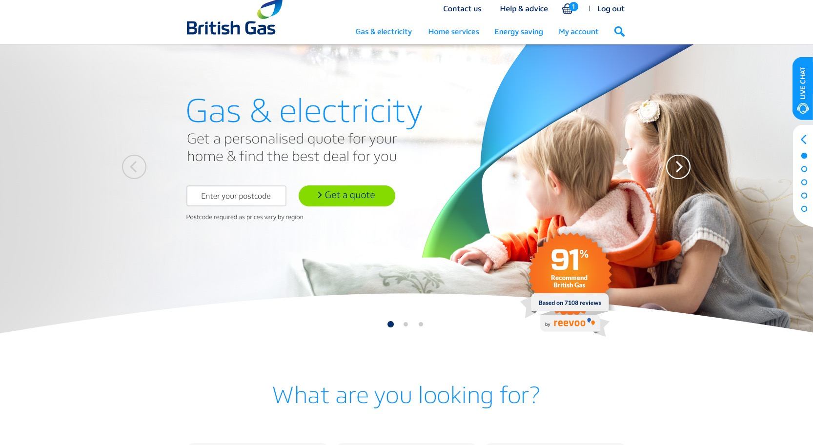
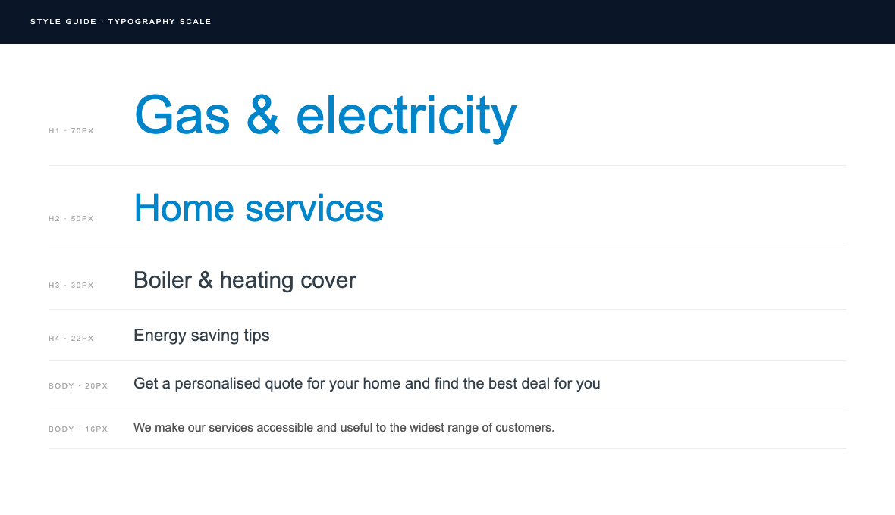
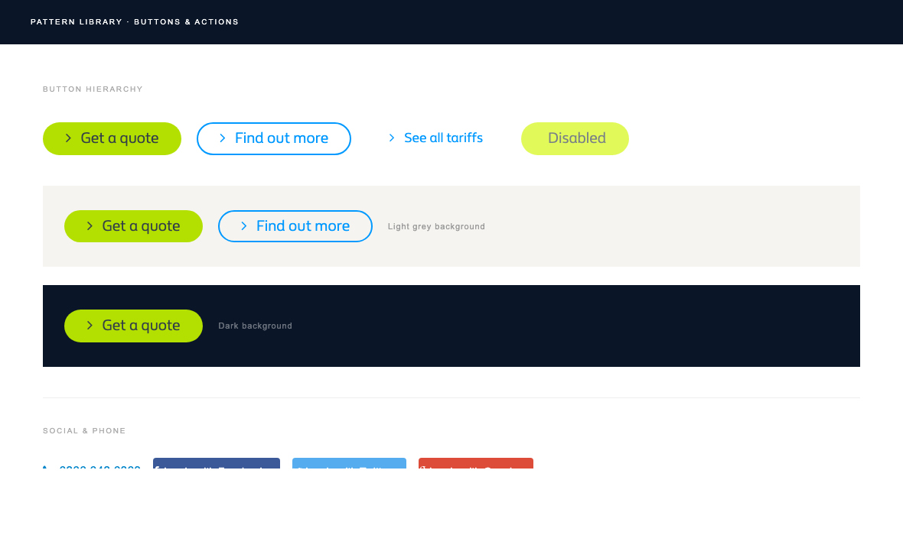
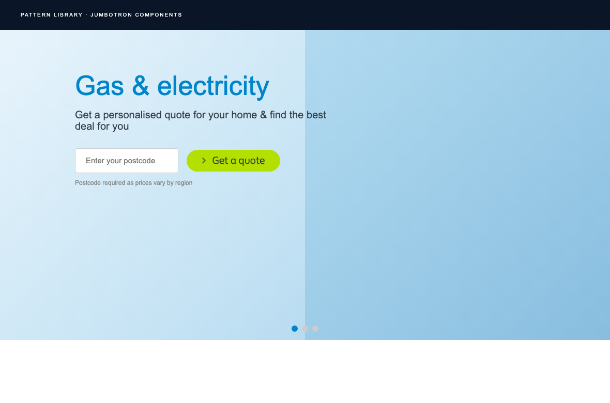
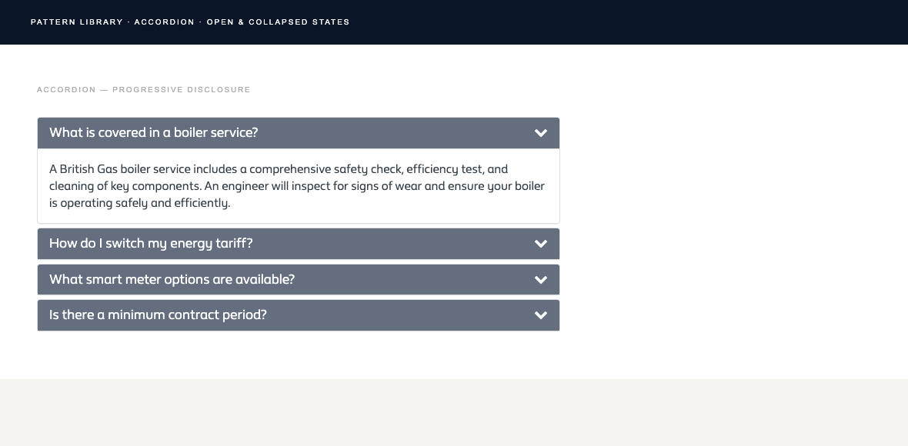
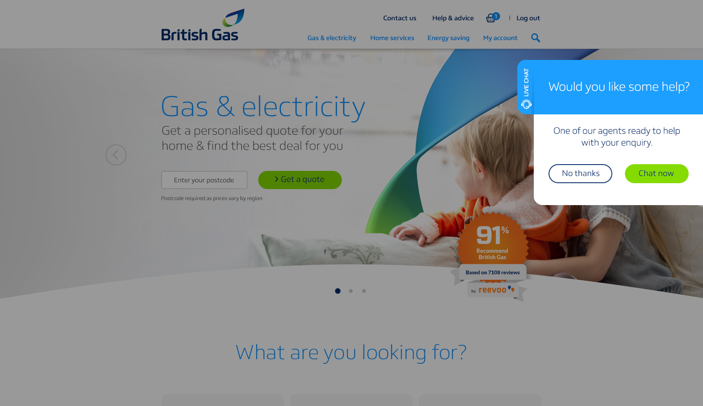
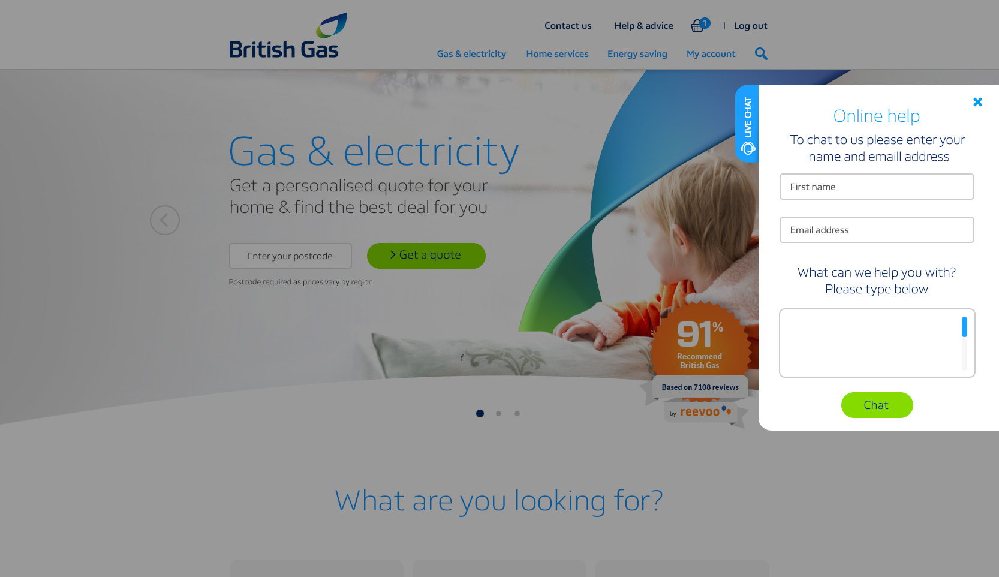
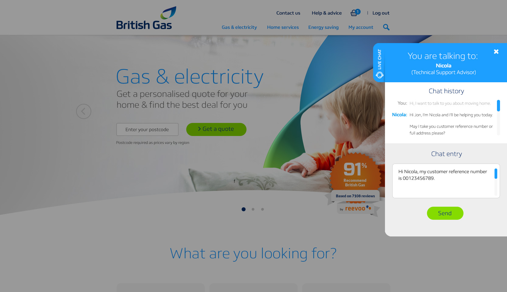
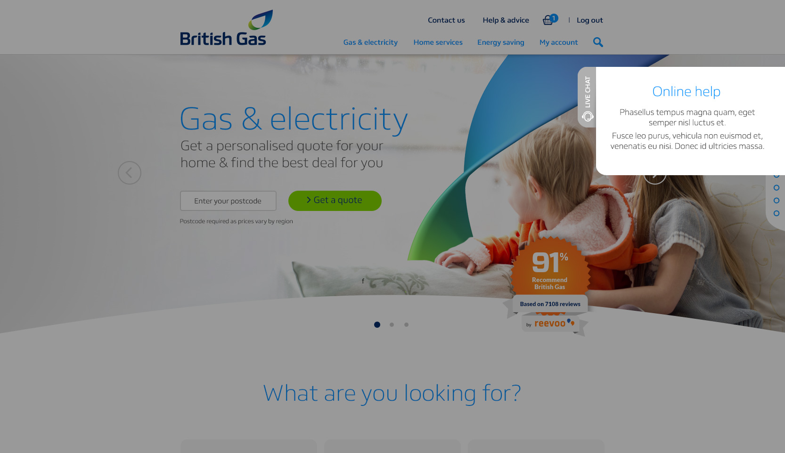

Case Study · 02 · British Gas
Scaling design across British Gas's first digital transformation
The Context
British Gas had a clear offline identity. The flame. The navy. The brand voice. But their digital presence hadn't kept pace. The website had grown organically over years, page by page, team by team, without a shared system to hold it together. Different screens looked like they belonged to different companies.
This was the moment to change that. The first full digital transformation for one of the UK's biggest household brands, starting with a complete responsive redesign of britishgas.co.uk and the creation of the tools that would make design scalable going forward: a style guide and pattern library, built from scratch.
"Our central drive is to make our customers' lives a little simpler. Clear and simple, friendly and patient, expert and reassuring."

britishgas.co.uk · Medium breakpoint (960px) · Redesigned homepage
My Role
I joined as Lead UI/UX Designer at a point where the brief was broad and the process was still being defined. A lot of my value came from shaping not just the design, but how the team worked and what we were building toward.
The Challenge
Before this project, there was no single source of truth for how britishgas.co.uk should look or behave. Designs were produced page by page. Decisions that had been made once were made again, differently, somewhere else. Forms existed in multiple inconsistent variants. Components were rebuilt rather than reused.
At the same time, the world had moved on. Mobile traffic was rising sharply and the site wasn't built to meet it. The whole thing needed to be rebuilt responsively, coherently, and in a way that a large multi-disciplinary team could maintain and extend without losing consistency.
No shared system meant no consistency. Every team was solving the same problems independently, producing divergent output and burning time. Brand identity wasn't translating to digital in any coherent way. The site felt like a patchwork.
A brand of British Gas's scale needed a process that could scale with it. Individual design decisions don't work when you have squads shipping across dozens of pages simultaneously. The system had to become the design.
Responsive Design
The redesign was fully responsive from day one, designed and tested across four breakpoints. This was new territory for British Gas. The organisation had previously designed for desktop and worked downward. We flipped that: designing for the full range, with each breakpoint getting deliberate attention rather than being an afterthought.
1280px
Large
960px
Medium
768px
Small
320px
X-Small
The goal was a consistent experience across all devices, with a minimum of resizing and panning. Navigation, layouts, imagery and interactions were all considered at each size, not retrofitted after the fact.
Typography System

Style guide · Typography scale · 9 defined text styles
Pattern Library
The pattern library was the centrepiece of this project. Not just a visual document, but a working system that teams across British Gas could use to build consistently, without having to reinvent anything. Every component was tested with real users. Every decision was made with scalability in mind.


"Content panels as building blocks, used as components to create any page within the CMS. Design once, use everywhere."
Navigation
Header, Mega Menu & Footer
Global elements redesigned as a cohesive system. The mega menu introduced a new navigation architecture to handle British Gas's broad product range without overwhelming users.
Actions
Buttons & Links
A defined hierarchy of primary, secondary and tertiary interactions. Social login patterns (Facebook, Twitter, Google) standardised across the platform.
Data Collection
Forms
Many disparate form types consolidated into a simplified, unified ruleset. Forms made dynamic using Single Page Application patterns, dramatically reducing friction.
Interaction
Accordions & Overlays
Patterns for progressive disclosure and layered content. Tested with users to validate when to expand in-context versus present in an overlay.
Content
Jumbotron Panels
Three jumbotron levels for Home, Hub and Spoke pages. Two levels only, to minimise information architecture complexity and keep CMS authoring manageable.
Feedback
Error & Validation
Consistent error messages, calendar patterns and caveat treatments across the entire site. Removing the patchwork of one-off implementations that preceded them.
Components in context
Every component was designed with its full range of states documented. The accordion shows progressive disclosure in practice. The live chat overlay demonstrates how a single component required four distinct states — each with its own defined behaviour, copy and layout.

Accordion · progressive disclosure pattern · open & collapsed states




Ways of Working
Working in agile squads was new at British Gas. The organisation had been used to more waterfall, handoff-driven delivery. Part of my contribution here wasn't just the design work itself, but helping to establish the processes and culture that made this way of working viable.
Each squad brought together UX, UI development, product and CMS capability under one roof. This removed the long handoff chains that had slowed previous delivery and meant design decisions were made alongside, not before, the people who would build them.
I introduced ways of working that hadn't existed before: shared design reviews, pattern contribution processes, and a regular cadence for testing and adding to the library. These weren't just efficiency measures. They changed how the team thought about design ownership.
01
Design in the open
Regular cross-team reviews meant decisions were visible early. Fewer surprises at handoff. Fewer rounds of late rework.
02
Patterns, not pages
Shifting the team's mindset from designing individual pages to designing reusable systems was one of the most significant cultural changes of the project.
03
Test before you ship
Every pattern in the library was user-tested before becoming official. The system was trusted because it had been validated, not just designed.
04
Built to be extended
The pattern library was a v1.0, explicitly. The goal was a foundation that would keep growing, with a live online version planned as the natural evolution.
Impact
The work had two types of impact. The immediate: a redesigned, responsive website that actually worked across devices, with a coherent design language for the first time. And the lasting: a shared system that fundamentally changed how the team designed and shipped.
01
britishgas.co.uk became fully responsive across four breakpoints, reaching millions of customers on mobile for the first time with an experience actually designed for the device they were on.
02
The pattern library eliminated the patchwork of one-off solutions. Squads across the organisation could now build to a shared standard, without needing to reinvent or re-debate every component.
03
Reusable, tested components reduced duplication across teams. Less time spent rebuilding the same things, more time spent solving real customer problems. A measurable shift in how the team spent its effort.
04
The system was designed to grow. The work established a culture of shared ownership around design decisions that outlasted the project itself, and the library continued to evolve long after v1.0 shipped.
Reflection
"The most important thing I built wasn't a component. It was the confidence across the team that design could be consistent, scalable, and owned by everyone."